빵껍질 없는 빵 이야기 - 식빵의 역사
게시: 2018-06-21T06:13:39+09:00
우리 동네에 뺑드미 제빵소라는 빵집이 있는 것을 오며가며 본 적이 있습니다. (망했는지 지금은 없어졌습니다...) Pain은 불어로 빵이고, de는 "~의"라는 뜻이라는 것은 알겠는데, 미(mie)라는 단어는 처음 보는 것이었어요. 스마트폰으로 불어 사전을 뒤져보니 (세상은 정말 편하고 좋아졌습니다!) mie라는 것은 빵의 껍질이 아닌 속살을 뜻하는 단어이더군요.
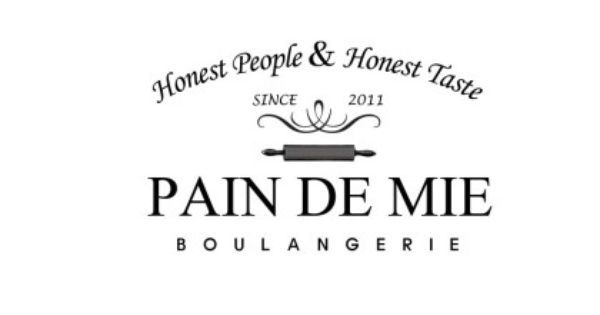
결국 뺑드미(pain de mie)는 '속살로 된 빵'이라는 뜻인데, 불한 사전에는 '식빵'이라고 설명되어 있었습니다. 생각해보면 빵에는 정말 많은 종류가 있는데, 우리는 그저 다 '빵'이라고 부르지만 실제로 구미 사람들에게 아무거나 '빵'이라고 지칭하면 안되는 모양입니다. 가령 헤밍웨이의 '무기여 잘 있거라'에서, 주인공과 그 여친인 캐서린이 스위스로 건너간 뒤, 식당에 들어가 '롤빵과 잼과 커피(rolls and jam and coffee)'를 주문하자, '전쟁 중이라 롤은 없고 빵(bread)만 있다'라고 종업원이 답하는 장면이 나옵니다. 저도 카투사로 근무할 때 둥글고 작은 빵을 가리키며 'bread'라고 말하자, 미군 하사관이 '그건 roll이고 bread는 이거지'라며 식빵을 가리키던 기억이 있습니다. 아마 우리나라 사람에게 외국인이 냉면을 보고 '국수'라고 부르는 것과 비슷한 느낌일까요 ?
생각해보면 식빵이라는 것은 먹는다는 한자 식에 포르투갈에서 온 외래어 빵이 합해진 이상한 단어인데, 그나마 일본에서 전해진 단어임에 틀림없습니다. 제가 어릴 때 할머니께서는 식빵을 항상 '쇼빵'이라고 부르셨거든요. 나중에 일본어를 배우면서 '쇼'가 식(食)의 일본식 발음이라는 것을 알게 되었지요. 식빵의 실제 일본어는 '쇼꾸빵'(食パン)이라는 것도 이번에 알았습니다. 어쨌거나 빵은 어차피 먹는 물건인데 굳이 거기에 왜 식(食)자를 붙여서 식빵이라고 불렀는지는 지금도 아리송합니다. 차라리 영어의 sliced bread가 더 공감이 가는 단어이긴 합니다.
Pain de mie도 그 이름 자체가 그 빵을 잘 설명해주는 이름입니다. 빵은 오븐에 구워서 만드는 음식이라서, 빵껍질(crust, 불어로는 croûte)과 빵속살(crumb, 불어로는 mie)로 나누어지거든요. 따라서 빵껍질이 없는 빵이라는 것은 예전에는 없던 개념이었습니다. 그러나 대부분의 사람들은 빵껍질은 싫어하고 빵속살만 좋아합니다. 그래서 만들어진 것이 이 pain de mie이지요. 그러나 이 pain de mie가 일반적인 빵이 된 것은 긴 빵의 역사 속에서 그나마 최근의 일입니다.
전에 '장발장이 잘못 했네' 라며 유머 게시판에 올라온 사진 속의 거대한 빵의 정체는 아마도 깡파뉴 빵, 즉 pain de campagne라고 글을 쓴 적이 있었지요. 실제로 아마 그런 큰 빵이 아니라 훨씬 작은 빵, 아마 바따르 빵(pain bâtard)이었을 것입니다. 왜냐하면 장발장은 철창 속의 유리를 깨고 그 속에 손을 넣어 빵을 훔쳤으니, 저렇게 엄청난 크기의 빵일리가 없습니다. 당시는 19세기 초이니, 아직 바게뜨 빵이 만들어질 때도 아니었고요.
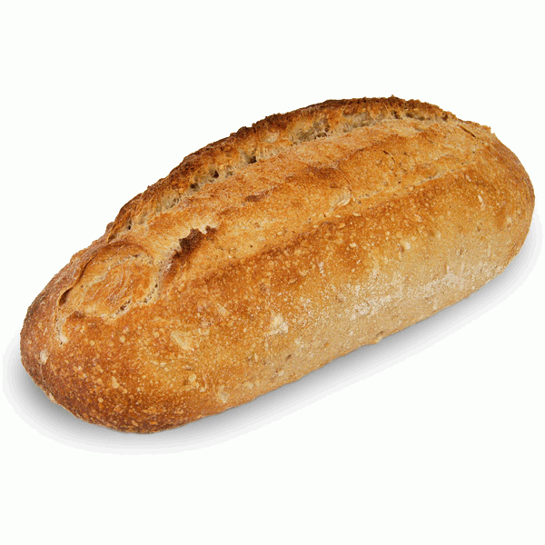
(바따르 빵 pain bâtard은 영어로 french short bastard라고 되어 있습니다. 당시 빵은 무게로 달아 파는 것이 보통이었는데, 이렇게 무게로 파는 것이 아니라 낱개로 파는 반 파운드 짜리 빵을 pain bâtard 라고 불렀다고 합니다.)
이런 깡파뉴 빵이나 바따르 빵은 그야말로 전통적인 방식으로 오븐 속에서 구워진 것이므로 굽는 과정에서 꽤 튼튼한 빵껍질이 형성됩니다. 아직 비닐 봉지도 냉동고도 없던 시절에, 빵은 오븐에서 꺼낸 순간부터 전분 역행(starch retrogradation)이라는 화학 작용 때문에 계속 수분을 잃고 딱딱해집니다. 이럴 때는 빵껍질이 빵이 메마르는 현상(go stale)을 그나마 좀 늦출 수 있습니다. 빵껍질에는 항산화, 항암 물질인 프로닐-리신 (Pronyl-lysine)이 빵 속보다 8배나 많이 들어있다는 장점도 있지만, 이렇게 빵 보존의 측면에서도 나름의 역할을 했습니다.
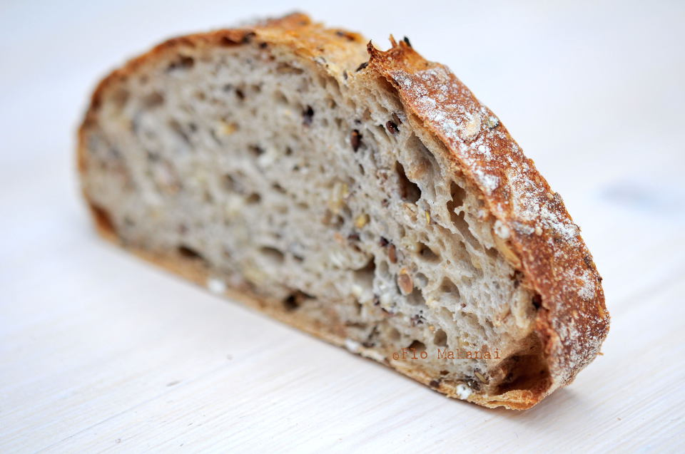
(빵의 껍질 croûte과 속 mie를 잘 보여주는 사진입니다.)
그래도 빵 껍질은 딱딱하고 거칠다는 점 때문에, 대부분의 사람들이 좋아하지 않았습니다. 가난한 사람들조차도 빵을 먹을 때 빵 속만 파먹고 껍질은 정말 안 좋은 때를 위한 비상 식량으로 주머니에 쑤셔박아두는 경우가 많을 정도였지요. 따라서 빵 껍질이 없는 빵을 만들 수 있다면 좋았을 텐데, 그게 또 의외로 어렵지 않았습니다. 빵을 금속제 팬(pan)에 담아서 비교적 낮은 온도에서 구우면, 빵껍질이 아예 없지는 않더라도 최소한 매우 얇아진다는 것을 18세기 초반부터 유럽 제빵사들이 알고 있었거든요. 그러나 이렇게 만들어진 빵은 빵껍질이 없어서 오래 보존할 수가 없었으므로 그렇게 인기를 끌지 못했나 봅니다.
특히 귀족 노조의 전신이라고 할 수 있는 유럽의 장인 조합, 즉 길드(guild) 때문에 이런 빵껍질이 얇은 pain de mie는 많이 만들고 먹을 수가 없었습니다. 프랑스의 경우, 제빵사(Boulanger) 조합에 이어 1440년 제과사(Pâtisserie) 조합이 만들어진 이후, 이 두 조합은 서로 경쟁하는 앙숙 관계였습니다. 서로 겹치는 부분이 많았거든요. 가령 혁명의 빵이라고 할 수 있는 브리오슈 같은 경우는 제과사 조합만 만들 수 있는 빵과자(pâtisserie, 영어로는 pastry)에 속했습니다만, 사실 제빵사들도 얼마든지 만들 수 있는 빵이었습니다. 마리 앙투와네뜨가 말했다고 잘못 알려진 말, 즉 "S’ils n’ont plus de pain, qu’ils mangent de la brioche" (그들에게 빵이 없다면 브리오슈를 먹게 하면 되지 않나)에서도 알 수 있듯이, 불랑제리와 빠띠세리는 서로 보완재이기도 하지만 대체재 역할도 했기 때문에 이 두 조합 사이에는 경쟁과 반목이 심했습니다. 그러다 1718년 제과사 조합이 제빵사 조합을 고발하여 오직 제과사들만 버터, 달걀, 설탕을 넣은 빵과자를 만들 수 있게 되면서, 소위 일용할 빵에 버터와 달걀 등을 넣는 것이 더욱 어려워졌습니다.
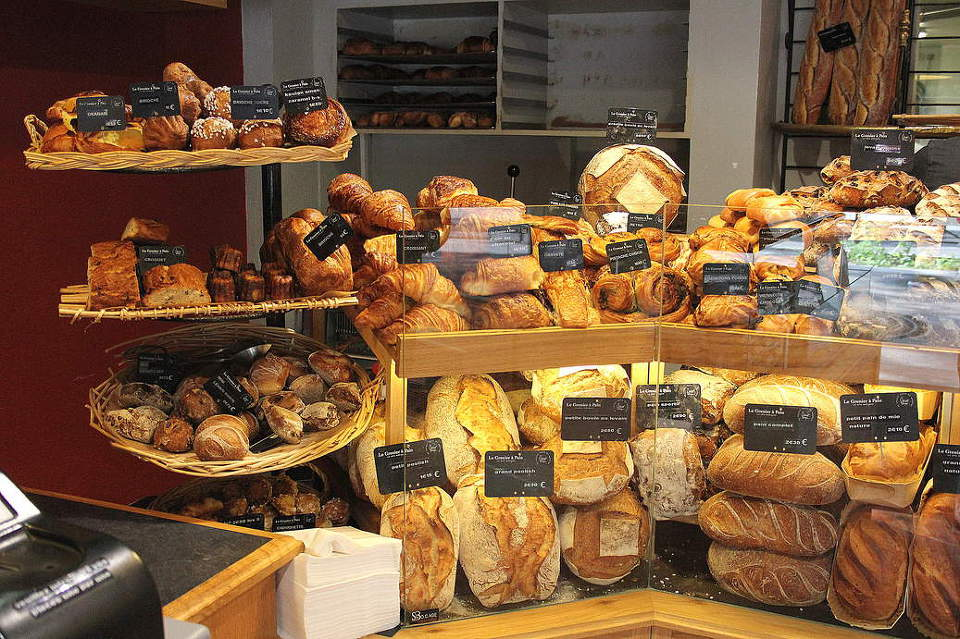
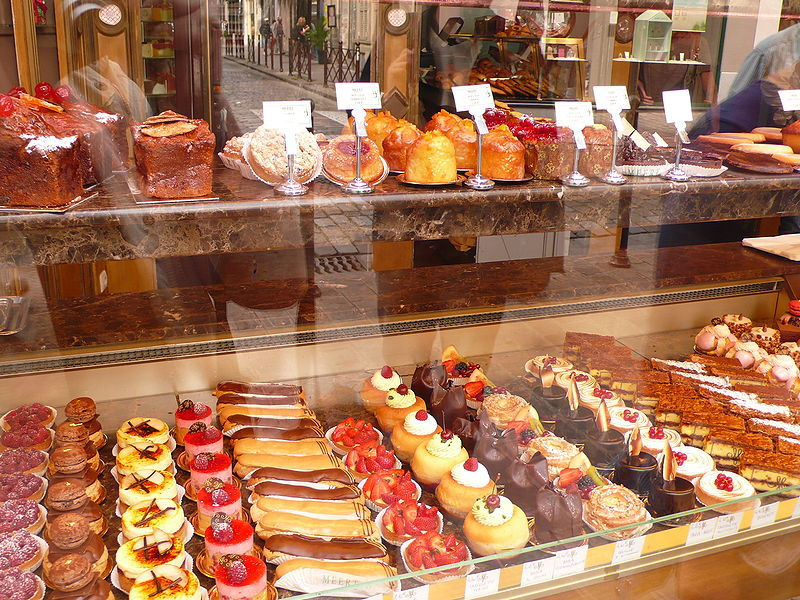
(위가 제빵사의 불랑제리, 아래가 제과사의 빠띠세리입니다. 확연한 차이를 보실 수 있습니다.)
빵껍질이 얇은 뻉드미와 이런 법규정이 무슨 상관이냐고요 ? 뻉드미는 빵껍질이 거의 없다시피 얇다보니, 상당히 빨리 말라 버렸습니다. 이렇게 빵이 마르는 것을 막는 기법에는 여러가지가 있겠습니다만, 좋은 방법 중 하나는 버터 등의 유지를 집어 넣는 것입니다. 그런데 바게뜨나 깡파뉴 빵에 버터 들어가는 것 보셨습니까 ? 저 빌어먹을 제과사 조합 때문에라도 넣을 수가 없었습니다. 따라서 뻉드미는 뭔가 특별한 경우 아니면 쉽게 볼 수 없는 빵이 되어 버렸습니다.
그러다가 영국에 산업 혁명이 나고, 길드가 해체되면서 적어도 영국에서는 빵에 버터와 달걀이 쉽게 들어가게 되었나 봅니다. 특히 영국은 샌드위치 백작 존 몬태규(John Montagu) 덕분에 17세기 후반부터 샌드위치가 유행하기 시작했지요. 샌드위치용 빵에는 빵껍질이 어울리지 않았고, 저런 빵껍질이 얇은 빵이 인기를 끌기 시작했습니다. 이런 빵에는 부드러운 식감과 더불어 보존성 때문에라도 버터와 달걀이 들어가기 시작했고요. 프랑스 빠띠세리 길드에서 알면 천지가 뒤집어질 일이었지요.
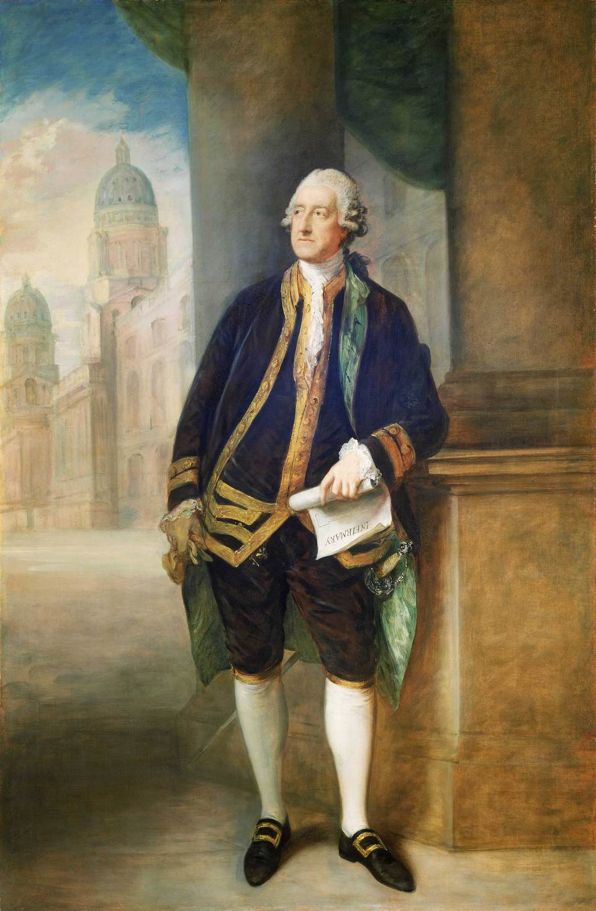
(제4대 샌드위치 백작 존 몬태규입니다. 샌드위치라는 단어가 전세계에서 널리 쓰이게 된 것은 그로즐리 Pierre-Jean Grosley라는 프랑스 작가 덕분입니다. 그는 18세기 후반에 런던에서 살아 본 뒤 영국인들의 생활상에 대한 'Londres'라는 제목의 책을 썼습니다. 거기서 그는 국무 총리인 샌드위치 백작 존 몬태규가 24시간 동안 식음을 전폐하고 도박 테이블에서 일어나질 않고 도박에 열중하다, 하인에게 '빵 사이에 쇠고기를 끼워 가져오라'고 주문했으며, 이것이 자기가 런던에 지내는 동안 굉장히 유행되었으며, 이 음식의 이름은 그 발명자의 이름을 따서 샌드위치라고 불리게 되었다고 합니다. 이 책에 나오는 이야기는 아니지만, 전설에 따르면 그때 같이 도박을 하던 귀족들도 몬태규가 주문하는 것을 보고 '나도 샌드위치와 같은 걸로' (same as Sandwich)를 외쳐 대어 그 이름이 굳어졌다고 합니다.)
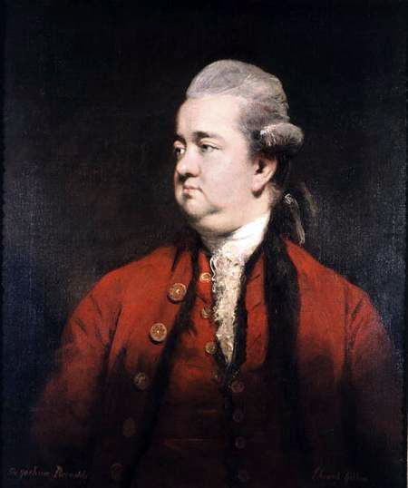
(영국 문헌에서 샌드위치라는 단어가 최초로 쓰인 것은 로마 멸망사를 써서 불후의 명성을 얻은 에드워드 기본 Edward Gibbon의 글에서 였습니다. 그는 1762년 11월 24일 일지에 이렇게 적었습니다. "영광스럽게도 나도 그 중 일원이긴 했지만, 그 존경스러운 인물들은 매일 저녁 정말로 영국적인 장면을 연출했다. 패션과 재산에 있어 대영제국의 제일 가는 인물들 20~30명이 커피 하우스의 한가운데 있는 냅킨으로 덮힌 작은 테이블에서 약간의 차가운 고기 또는 샌드위치 한조각에 펀치주 한잔으로 저녁을 때우곤 했다.")
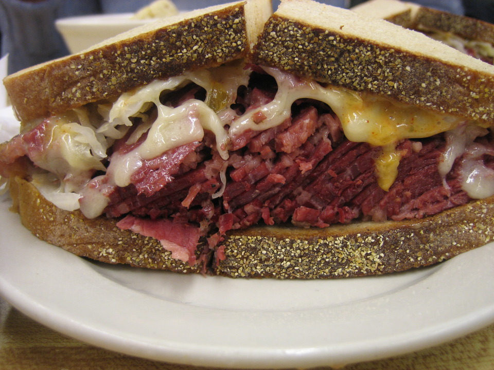
(모든 샌드위치가 다 뺑드미 스타일의 빵을 쓰는 것은 아닙니다. 대표적인 콘비프 샌드위치인 루벤 Reuben 샌드위치는 리투아니아 출신 유태인이 미국에서 만든 샌드위치인데, 호밀빵으로 만듭니다.)
아무튼 샌드위치는 프랑스를 비롯한 전세계에 별 거부감 없이 퍼졌습니다. 대표적인 프랑스식 샌드위치로는 크로끄-무슈(croque-monsieur)와 크로끄-마담(croque-madame)이 있는데, 이 또한 바게뜨나 깡파뉴 빵으로 만드는 것이 아니라 껍질이 얇은 뺑드미로 만들어졌습니다. 그러나 이 크로끄-무슈가 나타난 것은 샌드위치 백작이 최초의 샌드위치를 먹은 이후 무려 150년 정도가 지난 뒤인 1910년대였습니다.
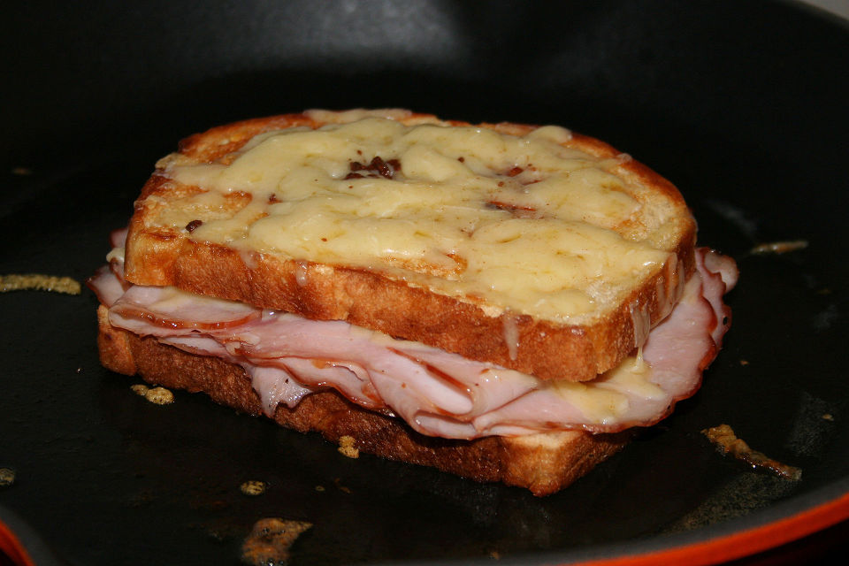
(끄로끄 무슈는 뻉드미 2조각 사이에 햄을 넣고, 그 위에 치즈를 올려 오븐에서 구운 샌드위치입니다. 원래 광부들이 갱도 안에서 먹기 위해 만든 샌드위치에서 비롯되었다고 하는데, 솔직히 가난한 광부들이 햄에 치즈를 일상적으로 먹었는지도 의심스럽고, 산소가 부족한 갱도 안에서 불 피우고 저런 치즈 샌드위치를 구웠을지도 의심스럽습니다. 자매품인 끄로끄 마담은 그 위에 달걀 프라이를 얹은 것입니다.)
프랑스에서 뺑드미가 유행한 것은 아이러니컬하게도, 결국 영국 때문이었던 모양입니다. 그리 많이 쓰이는 표현은 아닙니다만, pain de mie와 같은 표현으로는 pain anglais가 있습니다. 즉, 영국식 빵이라는 뜻이지요. 이는 나중에 프랑스를 여행하는 영국인들이 많아지면서, 영국식으로 빵껍질이 얇은 빵을 찾는 영국인들을 위해 프랑스 제빵사들이 뻉드미를 굽기 시작했기 때문이라고 합니다. 여전히 프랑스인들은 '빵이라면 당연히 바게뜨'를 외치는 모양이지만, 그래도 샌드위치는 영국식인 뺑드미가 더 어울립니다.
프랑스어로는 이렇게 보통 명사가 있습니다만, 영어로는 식빵을 뭐라고 할까요 ? 물론 위에서 언급한 대로 sliced bread가 일반적입니다. 그러나 이건 1920년대에 들어서야 빵자르는 기계가 나오면서 붙여진 이름입니다. 그 전에는 뭐라고 불리웠을까요 ? 뜻 밖에도 영국식 영어에서는 특별한 이름이 없이 그냥 샌드위치 빵 또는 pan bread라고 불렸습니다. 껍질이 얇은 빵은 위에서 언급한 것처럼 팬에 넣어 구우니까요. 오히려 이런 빵을 부르는 이름은 미국에서 나온 것이 유명합니다. 즉, 이 빵은 미국식으로 풀먼 빵(Pullman loaf)라고 불렸습니다. 풀먼이라는 것은 19세기 후반에 세계적인 명성을 누린 기차 객실 제조업체 이름입니다. 이 미국 회사에서는 객실 차량 뿐만 아니라 기차 식당칸 차량도 만들었는데, 이런 기차 식당차에는 공간이 워낙 좁기 때문에, 기존 방식대로 둥근 빵을 구우면 좁은 공간에 많은 양의 빵을 보관할 수가 없었습니다. 그래서 요즘처럼 네모난 직육면체 모양으로, 샌드위치 만들기에 딱 좋게 빵껍질이 얇은 빵을 대량으로 구워 실었는데, 그 때문에 이런 식빵을 풀먼 빵이라고 부르게 되었습니다. 그러다 1928년에 제대로 된 식빵 써는 기계가 만들어지면서 sliced bread가 된 것이고요.
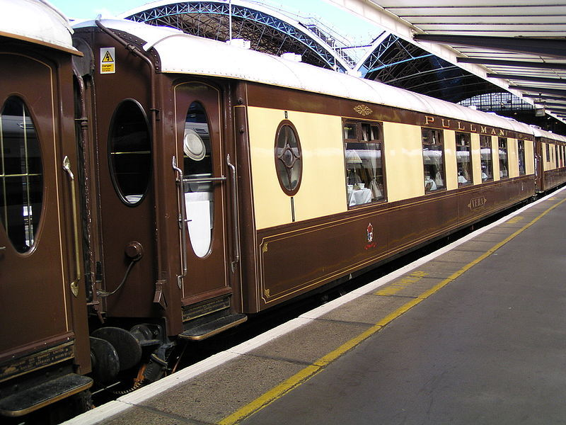
(풀먼 객실차입니다. 당대의 전세계 표준 차량으로 쓰였고, 러시아어에도 풀마노프스키 Pulmanovsky 객차라는 명사가 생길 정도로 유명했습니다.)
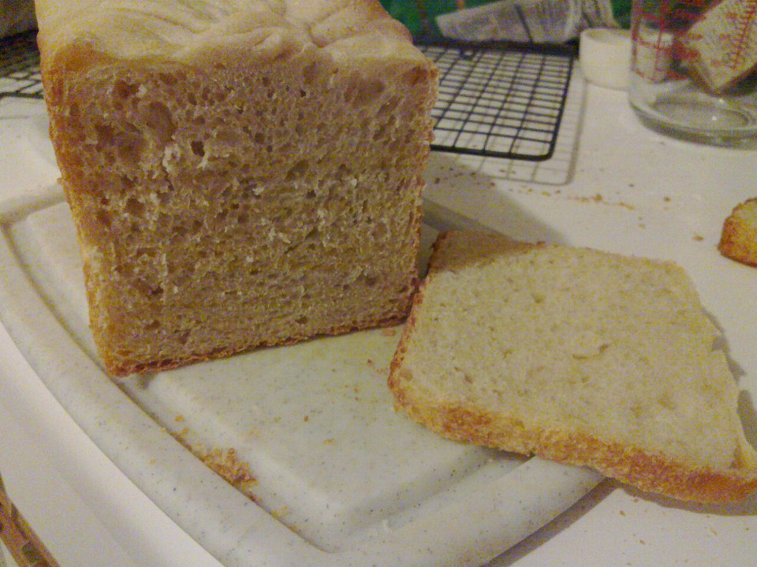
(풀먼 로프 Pullman loaf 입니다. 그냥 식빵입니다.)